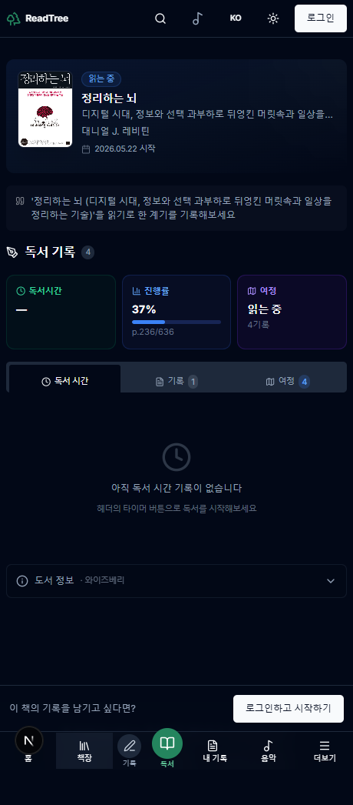
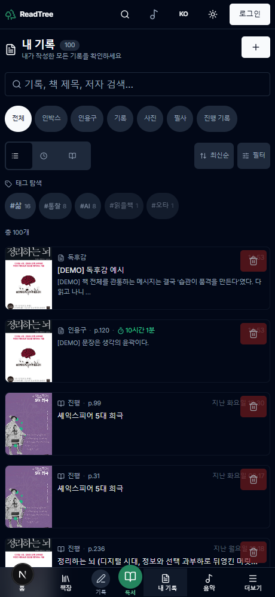
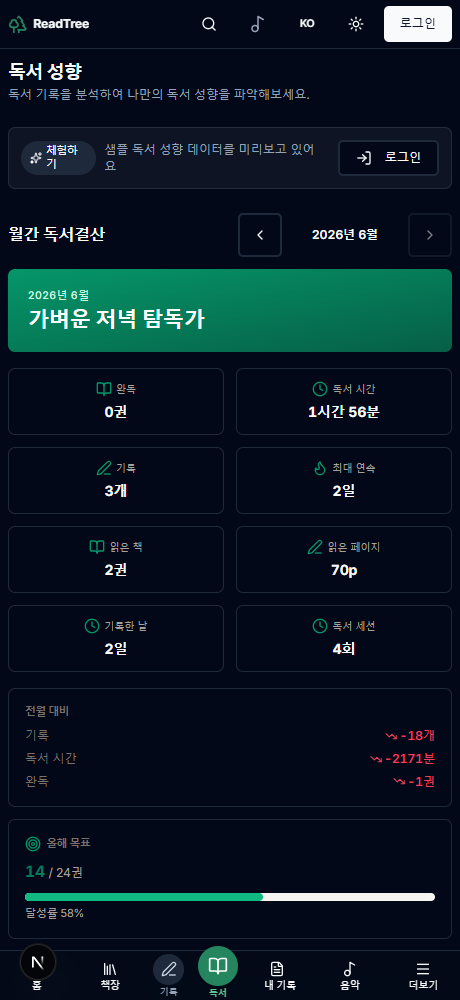

변경된 화면을 로컬 dev 서버에서 Playwright로 실제 캡처했습니다. 목업이 아닌 실제 렌더 결과입니다.
—로 나옵니다(로그인 시 실제 시간 표시).
② 내 기록의 ⏱배지·독후감은 신규 기능이라 샘플 데이터가 없어, 임시 데모 기록을 넣어 캡처한 뒤 즉시 삭제했습니다.

이 캡처는 게스트(샘플)라 ⏱ 독서시간이 —로 보이지만, 📊 진행률 100% · 🧭 1회독 · 기록 수는 실제 값으로 렌더됩니다. 로그인 사용자에겐 ⏱에도 누적 시간이 표시됩니다.
컴포넌트: components/books/reading-overview-panel.tsx · 진행률은 공용 computeProgressPercent(A5) 사용 → 다른 화면과 정합.
/notes)
getTimeline에 넣었지만 /notes는 실제로 searchNotes(로그인)·getSampleAllNotes(게스트)를 사용 → 배지가 안 떴습니다. 두 함수에 세션 조인을 추가해 수정 완료(캡처로 검증)."10시간 1분"은 데모 세션(36100초) 기준이라 큰 값입니다 — 실제 사용 시 세션 시간만큼 표시됩니다.
/stats)
통계 페이지의 연속 기록일(스트릭)·독서 통계·월간 결산 섹션입니다. 이번 개편으로 스트릭 계산을 한 곳(lib/utils/streak.ts)으로 통일해, 홈 히어로·통계·월간 결산이 같은 값을 보여줍니다(B3-2).
시간 표기(N시간 M분)·월 경계(KST)도 공용 유틸(A1·A2)로 통일됨.
독서 페이스(C7)와 책 상세의 ⏱ 시간 값은 getReadingTimeStats로 세션을 조회하는데, 이 함수는 비로그인(게스트)에서 차단됩니다. 따라서 로컬 게스트 캡처로는 빈 상태만 보입니다.
기록시간_UI변경_가이드_2026-06-04.html의 충실 목업을 참고하세요.
컴포넌트: components/books/reading-pace-panel.tsx
| 화면 | 실제 캡처로 확인된 변화 |
|---|---|
| 책 상세 | 3축 통합 요약(📊진행률·🧭여정 실값, ⏱시간은 로그인 시) — C8 ✅ |
| 내 기록 | ⏱ 독서시간 배지(C6) + "독후감" 라벨(C9) ✅ — C6 데이터경로 버그도 수정 |
| 통계 | 스트릭·결산 UI(B3-2 정합) ✅ |
| 독서 페이스(C7) | 로그인 전용(게스트 캡처 불가) — 구현 완료, 목업 참조 |
캡처는 로컬 dev(게스트) 환경 기준입니다. 데모용 임시 기록은 캡처 직후 삭제했습니다. · ReadingTree · 2026-06-04